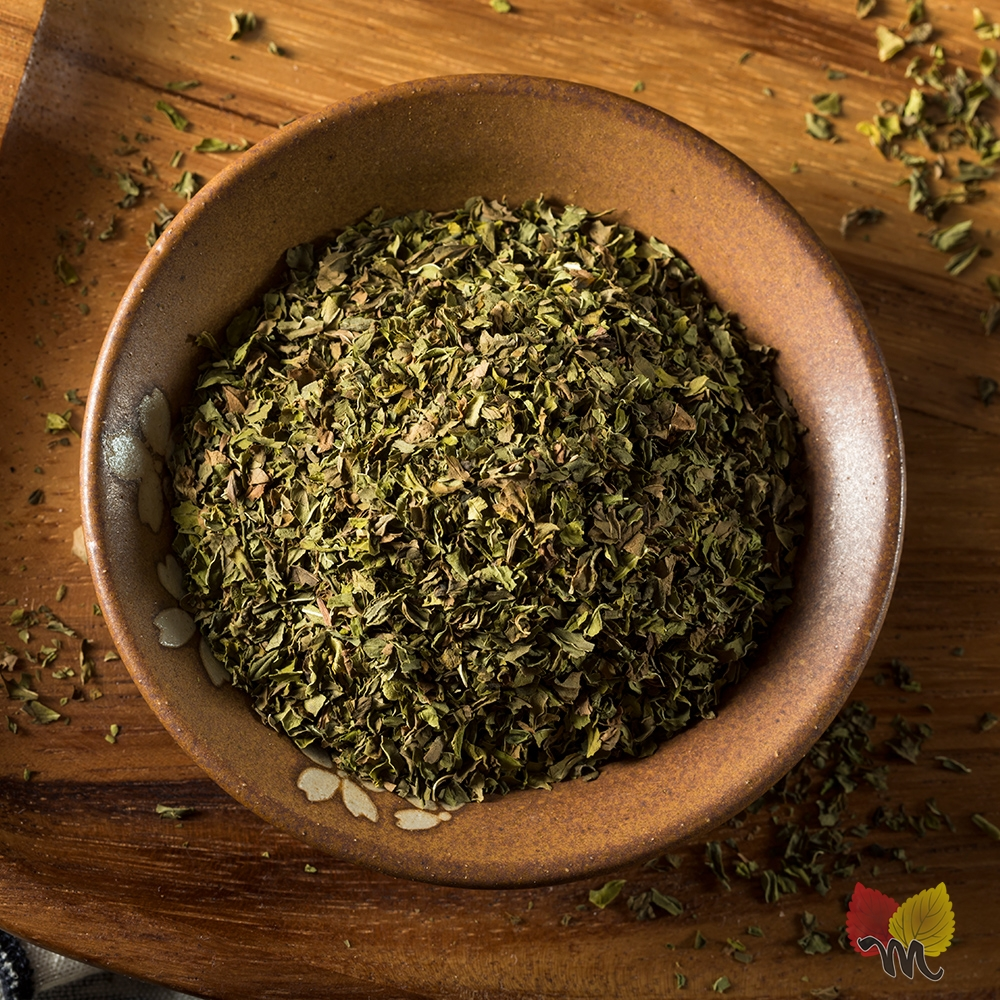
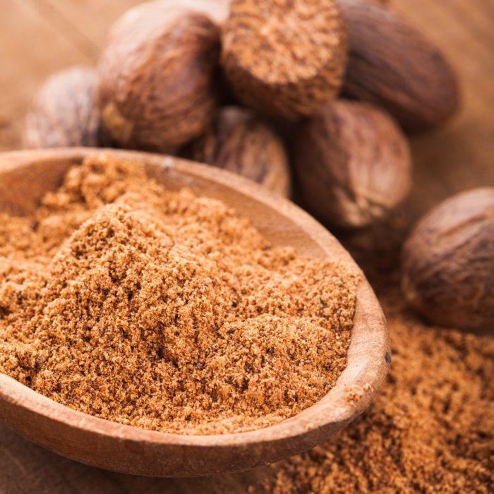

Kırmızı Pul Biber
- Bağışıklık sistemimizi güçlendirerek metabolizmamızın daha düzenli çalışmasını sağlayan bir baharat.
- Kış mevsiminde kullandığımızda vücut ısısını artırıyor, dışarıdan gelen bakteri ve virüslere karşı bizi direnç olarak kuvvetlendiriyor.
- pul biberin metabolizmayı hızlandırarak yağ yakımını artırir. Özellikle kilo vermek isteyenler için ideal bir besindir.
- İltihap sökücü ve enfeksiyon giderici olması nedeniyle artirit ağrılarına iyi gelir.
- Kırmızı pul biber dolaşım sistemine yardımcı olur, kolesterolü düşürerek kalp hastalıklarını önler, lipit (yağ) birikimini azaltır ve bu nedenle aşırı kan pıhtılaşmasını tersine çevirir.
Hakkında
Daha Fazla Bilgi İçin Tıklayınız

Hakkında
Nane
- Ağızda zararlı bakteri üremesini önleyerek, dil ve dişleri temizleyerek, ağız sağlığını iyileştirir.
- Doğal bir uyarıcıdır zihinsel sağlığı destekler, yorgunluk, anksiyete ve depresyonu rahatlatır.
- Hızlı ve etkili bir bulantı kesicidir.
- Akne semptomlarını rahatlatır.
- Burun, boğaz ve akciğer tıkanıklıklarını temizler.
- Nane güçlü bir adaptojenik bitkidir ve baş ağrısını iyileştirmeye yardımcı olur
- Nane, besinlerin daha iyi emilmesini kolaylaştırmaya yardımcı olan sindirim enzimlerini uyarır.
- Nane içindeki aktif yağ olan mentol, hazımsızlığı gidermeye yardımcı olur.
Hakkında
Daha Fazla Bilgi İçin Tıklayınız
Tarçın
- Tarçın, antioksidan içeriği en yüksek olan baharat türlerinden bir tanesidir.Bu sayede hemen hemen tüm kanser türlerine karşı önemli bir koruma sağla
- Tarçının, insülin hormonuna duyarlılığı önemli ölçüde artırdığı birçok çalışmada saptanmıştır.
- Tarçın'ın antimikrobiyal özellikleri virüslere kadar uzanır, bu durum HIV ile savaşmaya veya hastalığı yönetmeye yardımcı olabileceğini gösterir.
- Tarçın, kan şekerini düşürücü özellikleriyle bilinir. İnsülin direnci üzerindeki olumlu etkilerinin yanı sıra tarçın, kan şekerini başka mekanizmalarla da düşürebilir.
- Tarçın, bakteriyel ve mantar enfeksiyonlarıyla mücadeleye yardımcı olur
- Vücuttaki zararlı maddelerin atılımını kolaylaştırarak etkilerini düşürmektedir.
Hakkında
Daha Fazla Bilgi İçin Tıklayınız
Ada Çayi
- Depresyonu ve stresi azaltır.
- Zararlı toksinlerin vücuttan atılmasına yardımcı olur.
- Beyin fonksiyonlarını geliştirir.
- Ağız ve diş eti hastalıklarına iyi gelir.
- Cilt leke ve hastalıklarında kullanır.
- Mide ve kolestrol hastaları için rahatlatıcı etkisi vardır.
- Aşırı terlemeyi azaltır.
- Ada çayının içeriğinde bulunan C vitamini, bağışıklık sisteminin normal fonksiyonuna katkıda bulunur.
- Vücutta detoks görevi gördüğü bilinen ada çayı düzenli olarak tüketildiğinde karaciğerdeki toksinlerin temizlenmesine yardımcı olarak vücudun zararlı maddelerden arındırılmasına destek olur.
Biberiye
- İltihap giderici özelliğiyle sindirimi hızlandırıyor ve kolaylaştırıyor.
- Kas spazmI ve ağrı giderici özelliğiyle biliniyor.
- Kalp sağlığını koruyor.
- Sinir fonksiyonlarının iyileşmesine yardımcı oluyor. Özellikle ataksi, bunama, Alzheimer ve Parkinson gibi hastalıkların önlenmesinde kullanılıyor.
- Biberiyede bulunan karnosol, rosmarinik, betülinik ve karnosik-asit kansere karşı koruyucudur
- Suyun vücuttan atılım hızını artırarak, idrar söktürüyor.
- Kilo verme ile ilgili etkili sonuçlar veriyor.
- Bağışıklık sistemini güçlendiren biberiye ayrıca eklem rahatsızlıklarına, kalp sağlığına ve kas spazmına karşı faydalıdır. B
Kekik
- Kekik tüketimi kalp ve damar sağlığının korunmasını sağlar.
- Düzenli kekik tüketen kişiler kanser türlerine karşı vücutlarında kalkan oluştururlar.
- Kekik tüketimi bağışıklığın güçlenmesine destek verir.
- Kekik dispraksinin tedavi edilmesi önemli doğal bir ilaçtır.
- Sindirim ve bağırsak sistemine ilişkin problemler kekik tüketimiyle düzelmektedir.
- Gözlerin sağlıklı olması için kekik tüketilebilir.
- Solunum yoluna ilişkin problemler kekikle son bulabilir.

Zencefil
- Zencefil sindirime yardımcı olan ve mide rahatsızlıklarını gideren fitokimyasallar açısından zengindir.
- Sindirim özellikleri, atıkları ve toksinleri ortadan kaldırarak vücudun doğal temizlik ve detoks sürecini canlandırmaya yardımcı olur.
- Zencefil mide bulantısını da azaltabilecek kimyasallar içermektedir.
- Taşıt tutması, sabah bulantısı, kolik, mide rahatsızlığı, ishal, irritabl bağırsak sendromu (IBS), kanser tedavisinin neden olduğu mide bulantısı dahil olmak üzere çeşitli "mide problemlerini" tedavi etmek için yaygın olarak kullanılır.
- Zencefil, baş dönmesi semptomlarını azaltmaktadır.
- Yapılan bir araştırma zencefilin osteoartrit (kireçlenme) ve romatizmal şikayetlere iyi geldiğini göstermiştir. Ayrıca adet kramplarının hafiflemesinde de etkilidr.
- Zencefil, kan dolaşımını düzenleyerek damarlarda yağ birikmesini engeller ve kalp krizi ya da felç riskini azaltır.
Hakkında
Daha Fazla Bilgi İçin Tıklayınız
Zerdeçal
- Sivilce, egzama ve sedef hastalığı gibi cillde ilişkin birçok sağlık sorununun iyileştirilmesinde zerdeçal ile hazırlanan doğal karışımlardan yararlanılabilir.
- Zerdeçal bağışıklık seviyelerini artırır ve destekler, kolesterolü düşürür.
- İltihabı yatıştırır.
- Zerdeçal kan akışını hızlandıran ve sindirim sistemini düzenleyen bir baharattır. Onun bu özelliği kilo vermeye yardımcı olur
- Mide asitliğini düzenler ve mideyi güçlendirir.
- Diyabet nedeniyle oluşan komplikasyon risklerini engeller. Hafızayı güçlendirir.
- Karaciğer dostudur. Vücutta biriken zehirli maddelerin atılmasını sağlar. Verem hastalığının tedavisini destekler.
Hakkında
Daha Fazla Bilgi İçin Tıklayınız
Kimyon
- Demir deposu olarak bilinen kimyon, çocuklarda büyümeyi destekler.
- Kandaki yüksek şeker miktarını azaltan kimyon, diyabet tedavisinde etkilidir.
- Anti-kanserojen ve antioksidan olarak, kolon ve meme kanseri başta olmak üzere çoğu kanser türüne karşı koruyucu özelliği vardır. Tümör oluşumunu durdurarak, tümörün daha geniş alanlara yayılımını engeller.
- Tıpkı bir balgam söktürücü gibi davranan kimyon, balgamın hapşırma, öksürme ve tükürme yollarıyla dışarı atılmasını sağlar. Astım ve bronşit gibi solunum yolu enfeksiyonlarının doğal tedavisidir.
- Kötü kolesterolle savaşır ve kalp ve damar sağlığına da iyi gelir. Damar tıkanıklığı, kalp krizi ve inme riskini önemli ölçüde azaltır.
- Sivilcelere, cilt kızarıklıklarına ve lekelere, cilt tahrişlerine ve güneş yanıklarına iyi gelir. Cildi canlandırır.
Hakkında
Daha Fazla Bilgi İçin Tıklayınız
Karabiber
- C vitamini yüklü olan karabiber antibiyotik etkisine sahiptir. Hastalıklara karşı kalkan görevi görür.
- Vitamin ve mineral açısından zengin olan karabiber enerji verir
- Göz sağlığı için en faydalı vitaminlerden biri A vitaminidir. Karabiberin içeriğinde de bolca A vitamini bulunduğu için göz sağlığına ve göz alerjilerine iyi gelir.
- Karabiber tüketimi kış aylarında virüslere karşı dayanıksız olan direnci yükseltir. Soğuk algınlığı, nezle, grip gibi kış hastalıklarının daha hafif geçirilmesinde yardımcı olur.
- Kansere karşı koruma sağlar.
- Cildin sağlıklı bir görünüme kavuşmasına yardımcı olur.
- Metabolizmayı sağlıklı çalıştırır.
- Saçta kepeklenme sorununa iyi gelir.
- Stresi önler.
Hakkında
Daha Fazla Bilgi İçin Tıklayınız
Safran
- Potasyum bakımından zengin olan safran kan basıncını sağlıklı seviyelerde tutmaya yardımcı olur.
- Antioksidan özelliği nedeniyle solunum rahatsızlıklarına iyi gelir.
- Depresyon, kaygı, hafıza kaybı ve nörolojik hastalıklara karşı koruma sağlar.
- C vitamini, magnezyum, demir, potasyum yönünden zengin olan safran aynı zamanda kan şekeri seviyesini düzenler.
- Analjezik özelliklere sahip olan safran tümörlerin büyümesini azaltır.
- Yaşa bağlı görme kalitesi düşen bireylerde görme keskinliğini arttır ve katarakt oluşumunu önler.
- Bronşiyal astım belirtileri ile iltihabı da hafifletir.
Hakkında
Daha Fazla Bilgi İçin Tıklayınız

Hakkında
Muskat
- İştah açıcı etkisi vardır. Zayıf olan ve iştah problemi yaşayan kişilerin kilo almak için kullanabileceği bir baharattır.
- Antiseptik özelliği sayesinde bağışıklık sisteminin güçlenmesine yardımcı olur.
- Ağız kokusuna çözüm sağlar. Diş eti rahatsızlıklarının tedavisine yardımcı olacağından diş macununa ekleyerek kullanılabilir.
- Sindirim problemlerinin giderilmesine yardımcı olur.
- Antioksidan özelliği sayesinde böbrek ve karaciğerin temizlenmesini sağlayarak bu organların işlevini artırır.
- Stresten dolayı uykusuzluk ve baş ağrısı problemi olanlar için faydalıdır.
- Kan hücrelerini artırır ve demir eksikliği tedavisine yardımcı olur.
Hakkında
Daha Fazla Bilgi İçin Tıklayınız